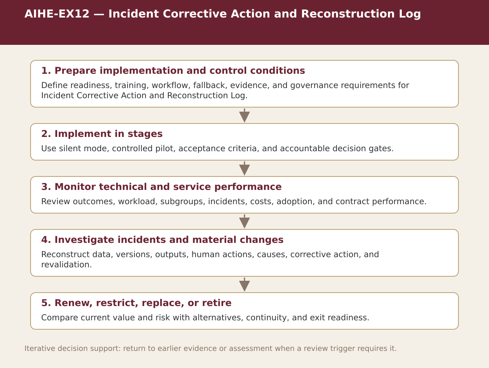

Supplemental specialist tool · Chapter 12
AIHE-EX12 — Incident Corrective Action and Reconstruction Log
Classify and reconstruct technical, clinical, workflow, privacy, cybersecurity, equity, and communication incidents.

Process steps
| Step | Stage | Purpose | Required Input | Expected Output | Decision Or Gate |
|---|---|---|---|---|---|
| 1 | Prepare implementation and control conditions | Define readiness, training, workflow, fallback, evidence, and governance requirements for Incident Corrective Action and Reconstruction Log. | Local evidence and the prior approved step | Versioned record for: Prepare implementation and control conditions | Proceed, revise, escalate, restrict, or stop as appropriate |
| 2 | Implement in stages | Use silent mode, controlled pilot, acceptance criteria, and accountable decision gates. | Local evidence and the prior approved step | Versioned record for: Implement in stages | Proceed, revise, escalate, restrict, or stop as appropriate |
| 3 | Monitor technical and service performance | Review outcomes, workload, subgroups, incidents, costs, adoption, and contract performance. | Local evidence and the prior approved step | Versioned record for: Monitor technical and service performance | Proceed, revise, escalate, restrict, or stop as appropriate |
| 4 | Investigate incidents and material changes | Reconstruct data, versions, outputs, human actions, causes, corrective action, and revalidation. | Local evidence and the prior approved step | Versioned record for: Investigate incidents and material changes | Proceed, revise, escalate, restrict, or stop as appropriate |
| 5 | Renew, restrict, replace, or retire | Compare current value and risk with alternatives, continuity, and exit readiness. | Local evidence and the prior approved step | Versioned record for: Renew, restrict, replace, or retire | Proceed, revise, escalate, restrict, or stop as appropriate |
Status. This process map is a navigation and decision-support aid. Adapt it to the relevant jurisdiction, institution, population, workflow, technology version, evidence cut-off, and accountable authority.